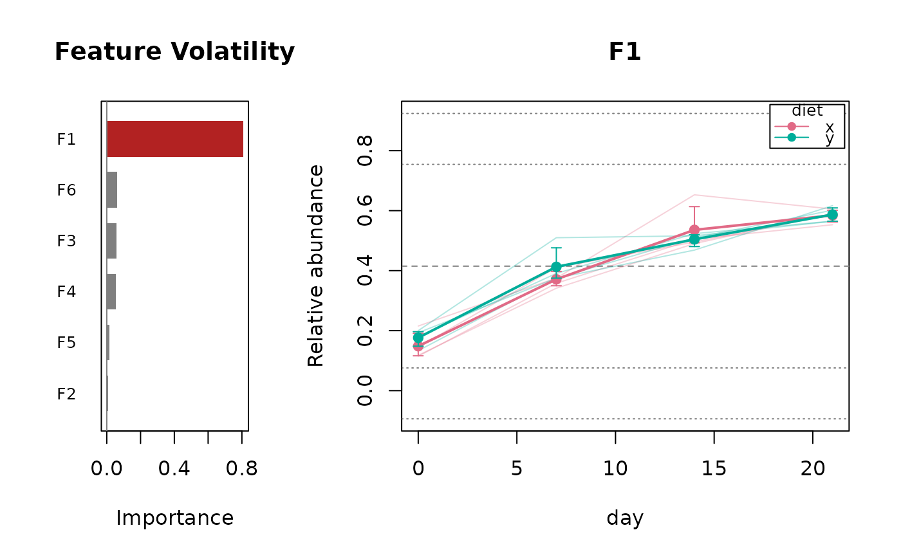

Which features change most predictably over time, and how: q2-longitudinal's
feature-volatility pipeline. A random-forest regression of each sample's
state (time point) on its features ranks the features by importance; the
most important ones are summarized (their mean change between states,
global mean, spread and so on), and plot() draws the importances beside
the volatility chart of a chosen feature.
Usage
feature_volatility(
counts,
subjects,
states,
groups = NULL,
data = NULL,
n_features = 100L,
test_size = 0.2,
rfe = FALSE,
rfe_step = 0.05,
rfe_folds = 5L,
importance = "impurity",
margin = 1L,
norm = "percent",
pseudocount = NULL,
n_trees = 100L,
conf_level = 0.95,
n_resamples = 1000L,
seed = 0L,
cpus = n_cpus(),
...
)Arguments
- counts
A count table: samples \(\times\) features, or any of the table types listed under Input Types (sparse tables stay sparse).
- subjects
Optional: the subject (individual) of each sample, for the chart's trajectories (q2's
individual_id_column): one value per sample, or a column name ofdata. NoNAs.NULLfor none.- states
The state (time point) of each sample, the forest's target: numeric, such as days or visit numbers (q2's
state_column), one value per sample or a column name ofdata. NoNAs; at least two distinct values.- groups
Optional: the group of each sample, a mean line per group in the chart, given as
statesis. NoNAs. Default:NULL, one group of every sample.- data
Optional sample metadata: a data frame with one row per sample, holding the columns named in
subjects,statesandgroups. Rows are matched to the samples incountsby row name, and rows for other samples are ignored; without row names, they must be in the samples' order. Default:NULL.- n_features
How many of the most important features to keep (q2's
feature_count), of those recursive feature elimination selected: a whole number, orInffor all of them. Default:100, as q2.- test_size
The fraction of the samples held out of the forest, to measure its accuracy on (q2's
test_size): \(\lceil\)test_size\(\times n \rceil\) samples, drawn at random.0trains on every sample (accuracy then only out of bag). Default:0.2, as q2.- rfe
Whether to select features first by recursive feature elimination with cross-validation (scikit-learn's
RFECV), as q2's pipeline always does (itsoptimize_feature_selection). Default:FALSE: one forest on every feature ranks them all.TRUEis q2's pipeline, at the cost of about \((\)rfe_folds\(+ 1) / \)rfe_stepforests instead of one.- rfe_step
How many features recursive feature elimination drops at each round: a fraction of the features (below 1) or a count. Default:
0.05, as q2 (5%, at least 1).- rfe_folds
The number of cross-validation folds that choose how many features to keep. Default:
5, as q2.- importance
What ranks the features:
'impurity'(the forest's mean decrease in impurity, scikit-learn'sfeature_importances_, as q2; the default) or'permutation'(out-of-bag permutation importance, slower). Seerandom_forest().- margin
The margin containing samples.
1if samples are rows,2if samples are columns. Ignored whencountsis a special object class (e.g.phyloseq). Default:1- norm
How the forest's table is normalized:
'percent'(relative abundances, the default),'none'(the values as given, as q2 does), or any othernormofnormalize(). The statistics and the chart always use relative abundances, as q2's do.- pseudocount
Value added to counts to handle zeros when
norm = 'clr'or'log'. Ignored for other normalization methods. See Pseudocount section.- n_trees
The number of trees. Default:
100, as q2.- conf_level
The confidence level of the chart's intervals: a number strictly between 0 and 1. Default:
0.95, as q2's chart.- n_resamples
The number of bootstrap resamples for each interval. Default:
1000, as q2's chart.- seed
An integer seed for the split, the forest and the bootstrap intervals. Default:
0.- cpus
How many parallel processing threads should be used. The default,
n_cpus(), is the CPU cores this R process may use, within any limits set on it. Results are the same for anycpus.- ...
More settings of the forest, passed to
random_forest():max_features,min_samples_leaf,min_samples_split,max_depth,criterion,max_samples,n_folds(default0: no cross-validation, as q2's fit; the held-out samples measure the accuracy) andkeep_forest.
Value
A list of class ecodive_feature_volatility:
featuresA data frame of the
n_featuresmost important features, most important first (q2'sfeature_metadata.tsv):feature,importance,cumulative_avg_decreaseandcumulative_avg_increase(the sums of the negative and of the positive differences between the mean relative abundances at consecutive states),net_avg_change(their sum: the last state's mean minus the first's), and over all the samplesglobal_variance,global_mean,global_median,global_sdandglobal_cv(SD / mean).meansA data frame, one row per feature, group and state:
feature,group,state,mean(of the relative abundances),lowerandupper(the bootstrap interval of the mean, asvolatility()'s) andn.abundancesThe relative abundances of those features: a samples \(\times\) features matrix.
samplesA data frame, one row per sample, in the input order:
sample,subject(withsubjects),group,stateandset("train"or"test").predictionsA data frame of the held-out samples (in the input order):
sample,observed(the state) andpredicted(by the forest).NULLwithtest_size = 0.performanceA named numeric vector: of the held-out samples' predictions,
mse,r_squared(\(1 - SS_{res}/SS_{tot}\)),slope,interceptandr(of the predicted on the observed states, as q2's scatter plot); andoob_r_squared, the forest's out of bag. The held-out values areNAwithtest_size = 0.rfeWith
rfe = TRUE, recursive feature elimination's results:ranking, a named integer vector over every feature (1 for the selected ones, then 2, 3, ... for those dropped later to earlier), andscores, a data frame of each number of features tried (n_features), the mean and SD (divisor n, as scikit-learn's) of the folds' \(R^2\), and each fold's (fold_1, ...).NULLwithrfe = FALSE(the default).forestThe
random_forest()result, trained on the training samples (withrfe, on the selected features only): every feature's importances (0 for the features not selected), out-of-bag predictions, and (withkeep_forest, the default) the forest forpredict().
Attributes conf_level and n_resamples describe the intervals, and
test_size the held-out samples. Its title (see ecodive_display) is
"Feature Volatility".
Details
The pipeline, as q2's:
Hold out a random
test_sizeof the samples (scikit-learn'strain_test_split(), not stratified).With
rfe, select features by recursive feature elimination on the training samples (see below).Grow a random forest of
n_treesregression trees of the state on the (selected) features of the training samples, and predict the held-out samples' states, to see how well the features track time.Rank the features by the forest's importance and keep the
n_featuresmost important.Summarize those features' relative abundances (of the whole table, every sample): q2's
_summarize_feature_stats(). The mean at each state is over every sample at that state, whatever its group.For the chart, each feature's mean and bootstrap interval for each group at each state, as
volatility()computes them.
Recursive feature elimination is scikit-learn's RFECV as q2 runs
it. The training samples are split, in order and without shuffling (they
are already in random order), into rfe_folds folds. In each, a forest
is grown on the other folds' samples and scored (\(R^2\)) on the fold;
the rfe_step least important features (impurity importance; ties in
the table's feature order) are dropped, and so on down to one feature.
The number of features with the largest total score over the folds (the
fewest, on ties) is kept: the same elimination on all the training
samples, stopped there, selects them. Every forest has the settings of
the final one. This grows about \((\)rfe_folds \(+ 1) / \)
rfe_step forests (126 by default), so it takes about that many times
as long as rfe = FALSE.
Differences from q2-longitudinal:
Random draws (the split, the forest and the intervals) are ecodive's own seeded PCG streams, not numpy's or JavaScript's, so they differ from q2's as one
random_statedoes from another. Given q2's split andrandom_state, the selected features, the forest and its importances are the same as q2's (seerandom_forest()).The forest's table is relative abundances by default; q2 grows it on the table it is given (usually counts): use
norm = 'none'for that.Features absent from every training sample are kept, with importance 0 (so recursive feature elimination drops them first, but they count towards the fraction
rfe_step); q2 drops them. Ties in importance are ranked in the table's feature order.global_cvis the standard deviation over the mean, as q2's "Global CV (%)" column, which despite its name is not multiplied by 100.q2's chart lets the viewer pick the feature and the grouping interactively; here
plot()draws one feature per call, and the grouping is set bygroups.
Input Types
The counts parameter is designed to accept a simple numeric matrix, but
seamlessly supports objects from the following biological data packages:
phyloseqrbiomSummarizedExperimentTreeSummarizedExperiment
For large datasets, standard matrix operations may be slow. See
vignette('performance') for details on using optimized formats
(e.g. sparse matrices) and parallel processing.
Pseudocount
The pseudocount parameter is only relevant when norm = 'clr'
or norm = 'log'.
Zeros are undefined in the centered log-ratio (CLR) transformation and
in the log of proportions. If norm is 'clr' or
'log', pseudocount is NULL (the default), and
zeros are detected, the function uses half the minimum non-zero value
(min(x[x>0]) / 2) and issues a warning.
To suppress the warning, provide an explicit value (e.g., 1), or
replace the zeros first with replace_zeros(), whose
result needs no pseudocount.
Why this matters: The choice of pseudocount is not neutral; it acts as a weighting factor that can significantly distort downstream results, especially for sparse datasets. See Gloor et al. (2017) and Kaul et al. (2017) for open-access discussions on the mathematical implications, or Costea et al. (2014) for the impact on community clustering.
See aitchison for references.
References
Bokulich, N. A., Dillon, M. R., Zhang, Y., Rideout, J. R., Bolyen, E., Li, H., Albert, P. S., & Caporaso, J. G. (2018). q2-longitudinal: longitudinal and paired-sample analyses of microbiome data. mSystems, 3, e00219-18. doi:10.1128/mSystems.00219-18
Bokulich, N. A., Dillon, M. R., Bolyen, E., Kaehler, B. D., Huttley, G. A., & Caporaso, J. G. (2018). q2-sample-classifier: machine-learning tools for microbiome classification and regression. Journal of Open Source Software, 3, 934. doi:10.21105/joss.00934
Breiman, L. (2001). Random forests. Machine Learning, 45, 5-32. doi:10.1023/A:1010933404324
See also
plot.ecodive_feature_volatility(), random_forest(),
volatility()
Other longitudinal:
first_differences(),
first_distances(),
nmit(),
volatility()
Examples
# 8 subjects sampled on days 0, 7, 14 and 21; feature 1 rises.
meta <- data.frame(
subject = rep(sprintf('s%d', 1:8), each = 4),
day = rep(c(0, 7, 14, 21), 8),
diet = rep(c('x', 'y'), each = 16) )
counts <- outer(seq_len(32), 1:6, function (i, j) (i * j) %% 11 + 5)
counts[, 1] <- counts[, 1] + 3 * meta$day
colnames(counts) <- sprintf('F%d', 1:6)
fv <- feature_volatility(counts, 'subject', 'day', 'diet', data = meta,
n_trees = 20, cpus = 1)
fv
#> Feature Volatility
#> Random forest of 20 trees, trained on 25 of 32 samples; on the 7 held out: MSE 4.6, R^2 0.93, r 0.984; OOB R^2 0.844
#> The 6 most important of 6 features, with relative abundances over time:
#> # A data.frame: 6 × 10
#> feature importance cumulative_avg_decrease cumulative_avg_increase
#> <chr> <dbl> <dbl> <dbl>
#> 1 F1 0.806 0 0.423
#> 2 F6 0.0613 -0.0986 0
#> 3 F3 0.0566 -0.107 0
#> 4 F4 0.0527 -0.0708 0
#> 5 F5 0.016 -0.0715 0.000586
#> 6 F2 0.00694 -0.0756 0
#> # … 6 more columns: net_avg_change <dbl>, global_variance <dbl>,
#> # global_mean <dbl>, global_median <dbl>, global_sd <dbl>, global_cv <dbl>
#> Means by state with 95% bootstrap intervals in $means; trajectories in $abundances
plot(fv)
